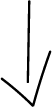

Scroll naar beneden!
Het verhaal
Laat ik beginnen bij het begin, de wortels onder dit initiatief die de boel staande houden.
Nadat de twee oprichters Nancy Wiltink en Michel Olden afstudeerden, kochten ze hun eigen stuk grond en gingen ze groenten verbouwen.
De Groene Leerweg begon als een tijdelijke tuin met soeprecepten. In gesprekken met vrienden en kennissen, ontdekten ze de behoefte aan kennis over zelf groenten telen. Hieruit ontsproot de Groene Leerweg, een plek waar stadsmensen leren hoe ze hun eigen voedsel kunnen verbouwen.
Door middel van een jaartraject worden niet alleen groenten geteeld, maar ook een gemeenschap van gelijkgestemden gekweekt.
 Vertel me meer!
Vertel me meer!